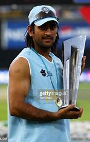
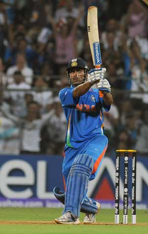
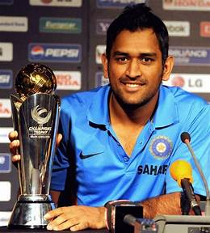

INDIA




MS Dhoni is a former Indian cricketer and one of the most successful captains in cricket history.
He is nicknamed ‘Captain Cool’ and has won almost every trophy that he has competed for in a career spanning almost two decades 1.
MAHENDRA SINGH DHONI (BORN 7 JULY 1981) IS AN INDIAN INTERNATIONAL CRICKETER.
HE IS A RIGHT HANDED BATTER AND A WICKET KEEPER. HE REPRESENTED THE INDIAN TEAM
AND WAS THE CAPTAIN OF THE SIDE IN LIMITED OVERS FORMATES FROM 2007 TO 2017 AND IN TEST CRICKET FROM 2008 TO 2014
DHONI LED THE TEAM THAT WON THE 2007 ICC T20 WORLD CUP, THE 2011 CRICKET WORLD CUP AND 2013 ICC CHAMPIONS TROPHY AND ASIA CUP IN 2010, 2016, 2018.
FROM FIRST SEASON OF IPL TO NOW HE IS THE CAPTAIN OF CSK TEAM
BORN IN RANCHI AND MADE HIS DEBUE FOR BIHAR IN 1999. MADEE HIS DEBUE FOR INDIAN TEAM ON 23rd DEC 2004
Dhoni was born on 7 July 1981 in Ranchi, Bihar (now in Jharkhand) in a Hindu
Rajput family to Pan Singh and Devaki Devi. His parents hailed from Lwali village in Uttar Pradesh (now Uttara
khand) and he was the youngest of three children.His family spells the surname as "Dhauni".
Dhoni did his schooling at DAV Jawahar Vidya Mandir where he started playing
football as a goal keeper but later moved to play cricket on the suggestion of his coach Keshav Banerjee.
From 2001 to 2003, Dhoni worked as a Travelling Ticket Examiner (TTE) at Kharagpur under South Eastern Railway zone of Indian Railways.
He played as a wicket-keeper for Commando cricket club from 1995 to 1998 and Central Coal Fields Limited
(CCL) team in 1998.[12] At CCL, he batted higher up the order and helped the
team qualify to the higher division.[13] Based on his performance
at club cricket, he was picked for the 1997/98 season of Vinoo
Mankad Trophy under-16 championship.[14][15] In the 1998–99, Dhoni played for Bihar U-19
team in the Cooch Behar Trophy and scored 176 runs in 5 matches.
In the 1999–2000 Cooch Behar Trophy, the Bihar U-19 cricket
team made it to the finals, where Dhoni made 84 in a losing cause.
Dhoni's contribution in the tournament included 488 runs
in nine matches with five fifties, 17 catches and seven stumpings.
Dhoni made it to the East Zone U-19 squad for the C. K.
Nayudu Trophy in the 1999–2000 season and scored only 97 runs in four matches,
as East Zone lost all the matches and finished last in the tournament.
Dhoni made his Ranji Trophy debut for Bihar against Assam in the 1999–2000 season, as an
eighteen-year-old scoring 68 runs in the second innings.[20] Dhoni finished the
season with 283 runs in 5 matches. Dhoni scored his maiden
first-class century while playing for Bihar against Bengal in the
2000–01 Ranji Trophy season.[21] Apart from this century, his
performance in the 2000/01 season did not include another score over
fifty and in the 2001–02 Ranji Trophy season, he scored just five
fifties in four Ranji matches.[22][23] Dhoni's played for Jharkhand in the
2002–03 Ranji Trophy and represented East Zone in the Deodhar Trophy where he
started gaining recognition for his lower-order contribution
as well as hard-hitting batting style. In the 2003/04 season, Dhoni scored a
century (128*) against Assam in the first match of the Ranji ODI
tournament and was part of the East Zone squad that
won the Deodhar Trophy 2003–2004 season scoring 244 runs in four matches
In the Duleep Trophy finals, Dhoni represented East zone and scored a
fighting half-century in the second innings in a losing cause.
Dhoni was identified as one of the emerging talents via the BCCI's small-town talent-
spotting initiative TRDW. In 2004, Dhoni was picked
for the India A squad for a tour of Zimbabwe and Kenya.
Against the Zimbabwe XI in Harare Sports Club, Dhoni effected seven
catches and four stumpings.[31] In the tri-nation tournament involving
Kenya, India A and Pakistan A, Dhoni helped India A chase
down their target of 223 against Pakistan A with a half-century
and scored scored 362 runs in six innings at an average of 72.40
with back to back centuries
NOT GOING IN DETAILS COZ WE CAN NOT EXPLAIN ABOUT SUCH MAN....!
HERE ARE SOME INCREDIBLE HONORSOF DHONI